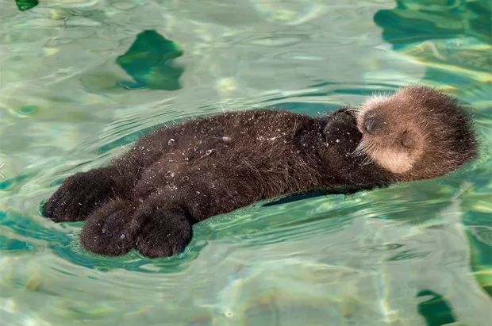
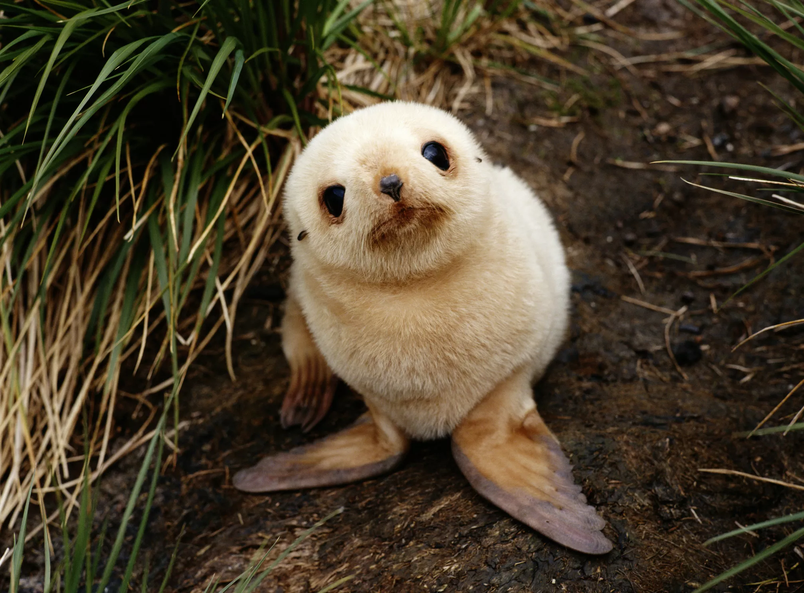

Essa é e uma página, destinada a mostrar a beleza do mar
Sobre a lontra Nascendo em grupo: As lontras filhotes geralmente nascem em ninhadas de 1 a 6 filhotes, e eles são chamados de "kit" ou "filhote". Mãe protetora: As mães lontras são extremamente cuidadosas. Elas mantêm os filhotes próximos e podem envolvê-los em algas para que não flutuem enquanto estão descansando na água. Aprendendo a nadar: Os filhotes não nascem sabendo nadar. Normalmente, eles começam a aprender a nadar com cerca de dois meses de idade, e suas mães os ensinam a mergulhar e a pegar alimento. Socialização: As lontras filhotes são muito sociáveis e passam tempo brincando entre si. Essas brincadeiras são importantes para o desenvolvimento de habilidades sociais e de caça. Cuidado com predadores: Mesmo sendo adoráveis, os filhotes precisam estar sempre atentos a predadores, como águias e raposas. A mãe lontra é vigilante e protege os filhotes de qualquer ameaça. Esses pequenos seres são fascinantes e desempenham um papel importante no ecossistema, ajudando a manter o equilíbrio nos ambientes aquáticos!  Sobre a foca Nascendo em colônias: As focas filhotes geralmente nascem em grandes colônias, onde muitas mães cuidam de seus filhotes ao mesmo tempo. Isso proporciona proteção contra predadores. Pelagem especial: Ao nascer, as focas filhotes têm uma pelagem macia e espessa, muitas vezes de cor clara, que as ajuda a se manter aquecidas em águas frias. Amamentação: As mães focas são muito dedicadas. Elas amamentam seus filhotes por um período que pode variar de algumas semanas a vários meses, dependendo da espécie. O leite materno é super nutritivo, ajudando os filhotes a crescer rapidamente. Aprendendo a nadar: Focas filhotes começam a aprender a nadar logo após o desmame. Elas passam muito tempo brincando na água, o que é essencial para desenvolver suas habilidades de natação e caça. Chamada única: Cada filhote tem um vocal único que permite que a mãe o reconheça em meio a uma colônia cheia. Esse chamado é fundamental para a comunicação entre mãe e filho. Esses adoráveis filhotes são não apenas encantadores, mas também desempenham um papel vital nos ecossistemas marinhos!